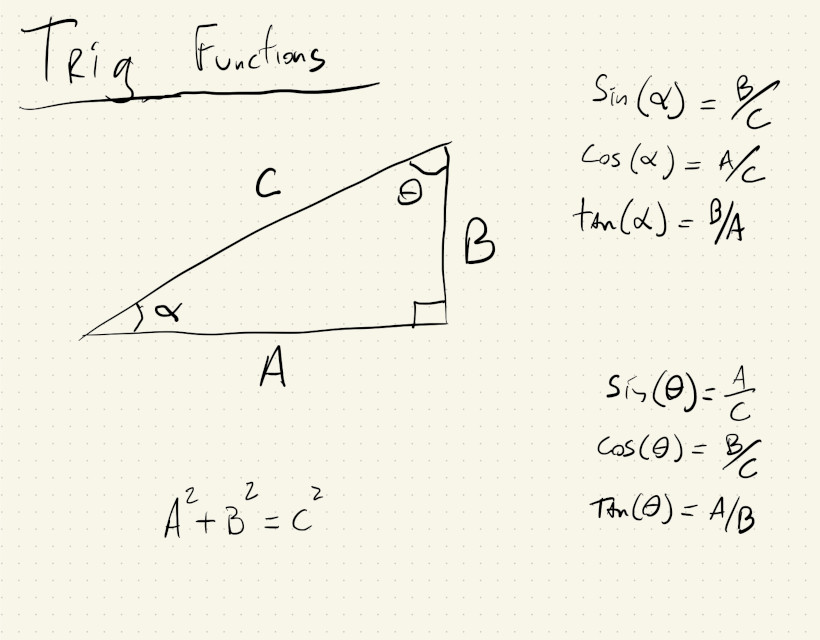
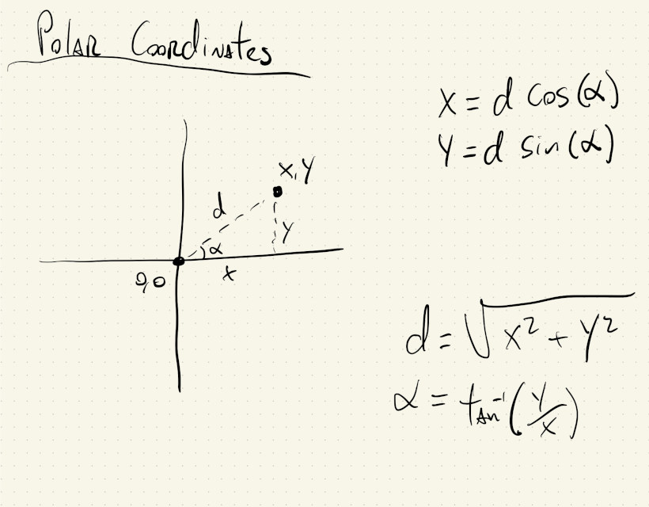
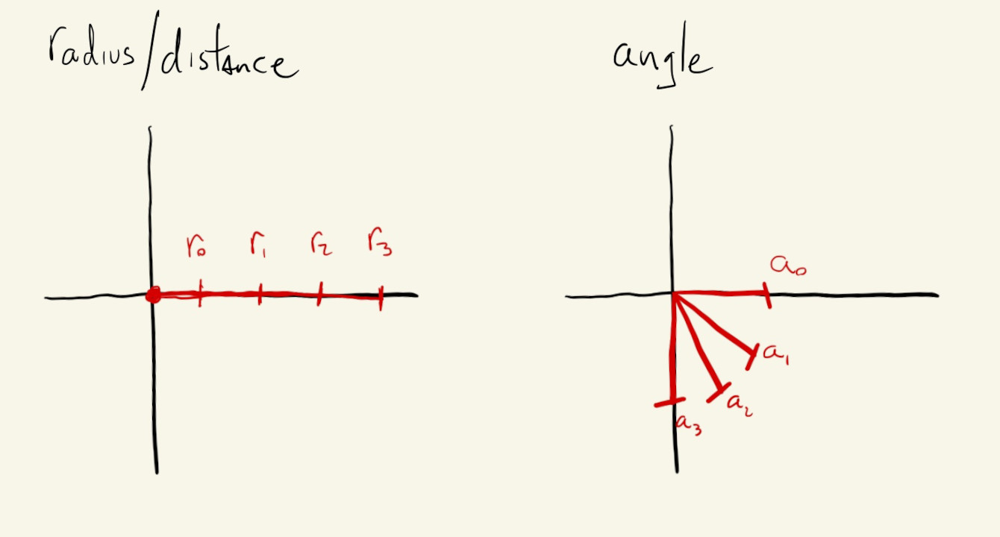
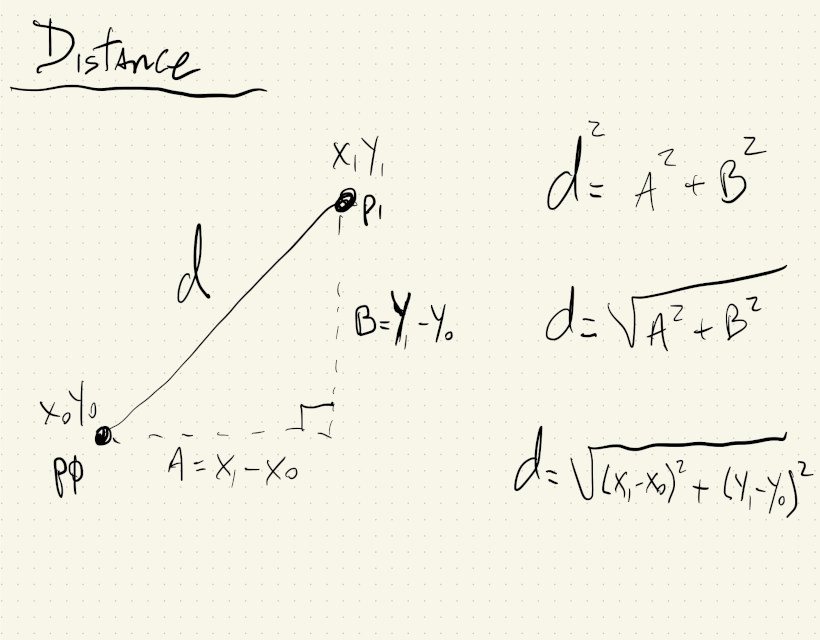
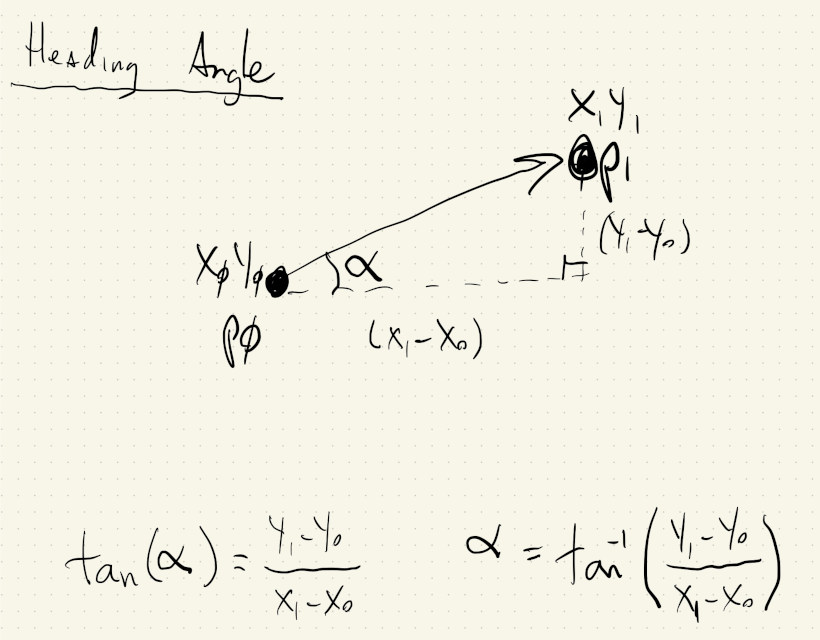
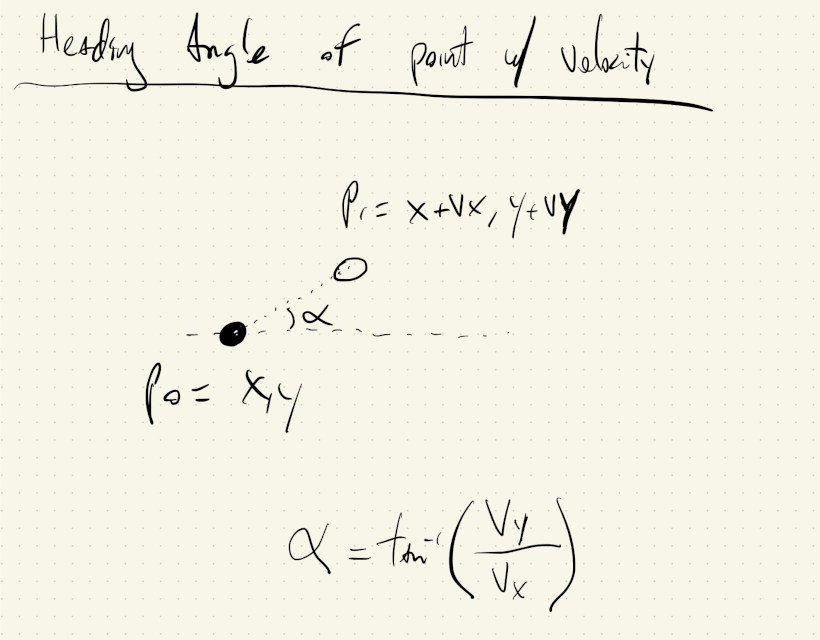
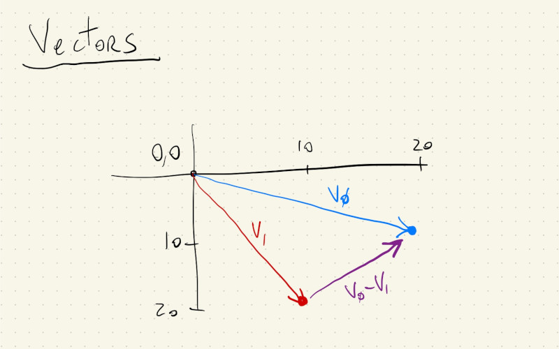

We just saw how to use the sin() and cos() functions to create cycles.
Let’s now take a look at other ways we can use these and other trigonometric functions in our sketches.
As a review: trigonometric functions are functions that, along with the Pythagorean theorem, define relations between the angles of a right triangle and the length of its sides:

We can use these relations to derive formulas for translating between Cartesian and polar coordinate systems.

Cartesian coordinates are what we use to specify points on a plane (and pixels on a screen) using two numbers that represent distances in perpendicular directions. Polar coordinates also specify points on a plane, but using a distance and an angle.
Just like we can use for() loops to iterate over the \((x, y)\) cartesian coordinates and create patterns in a grid, we can also iterate over the two variables in a polar coordinate system to create patterns.
In this example, our outer for() loop iterates through different values for how far we want to be from the center of the canvas, in steps of \(20\) pixels, and the inner for() loop iterates through all possible angles from the positive x-axis, in steps of \(1^{\circ}\):

This one is pretty simple and could’ve been done by drawing concentric ellipses. If we untangle some of our logic we’ll see we’re implementing the trigonometric functions for defining a circle.
And that’s basically what the for() loops are doing: as long as we keep the angle used to calculate x equal to the angle used to calculate y, we are implementing the parametric equation of a circle:
But, what if we move the angle in our x calculation \(3\) times faster than the angle for y?
If we just change this:
let x = r * cos(radians(a));
to this:
let x = r * cos(radians(3 * a));
we get this:
Yeah… polar coordinates FTW! I don’t think we can draw that with circles.
We can play with that value and see how the drawing changes. We can also add a different multiplier to the y angle as well:
let x = r * cos(radians(3 * a));
let y = r * sin(radians(7 * a));
Try out some new values for the angle multipliers in the code above ☝️. Cool, right?
Or, use something else, like the r value, to increment the angle:
let x = r * cos(radians(a + 2 * r));
let y = r * sin(radians(a));
Or, both:
let x = r * cos(radians(2 * a + 2 * r));
let y = r * sin(radians(a));
Besides creating unexpected concentric patterns, we can also use polar coordinates to transform one-dimensional signals into 2-dimensional signals.
What?
Let’s say we have a one-dimensional signal, like time, or the number of people in a room, and we want to create a 2-dimensional visualization of this data.
We can easily use polar coordinates to map a single value to a point in our canvas. This is also possible using cartesian coordinates directly (as we’ll see when we start processing images), but using polar coordinates is a bit simpler and perhaps more intuitive.
Let’s start by using a single variable from a for() loop to derive our r values and a angles.
If we make r grow proportional to the angle, we get a spiral:
And if we increase the frequency of the angles, like we did before by multiplying them by a constant, and also increase the range of our r:
let r = map(a, 0, 360, 10, 1.4 * maxRadius);
let x = r * cos(radians(8 * a));
let y = r * sin(radians(8 * a));
We get a tighter spiral that goes all the way to the corners of our canvas:
We can also add an offset to our angles (this is often called the phase of an angle) that changes where the spiral starts:
let x = r * cos(radians(8 * a - phaseVal));
let y = r * sin(radians(8 * a - phaseVal));
It’s kind of subtle, but if we re-run the following sketch and look at the center of the spiral we’ll notice the effect of the phase value:
It’s easier to see its effects if that offset increases or decreases with every frame:
let x = r * cos(radians(8 * a - 8 * frameCount));
let y = r * sin(radians(8 * a - 8 * frameCount));
Our canvas is spinning slowly, but the shape makes it seem like it’s a line that is being drawn infinitely, or circles that are growing ! We can play with the phase multiplier above ☝️ to make the spiral spin faster, slower and even backwards.
If we make the the x and y angles slightly out of sync, we get an effect that is almost 3D:
let x = r * cos(radians(9 * a - 8 * frameCount));
let y = r * sin(radians(8 * a - 8 * frameCount));
Ok, in those last couple of examples with animations we were mapping two variables, our loop iterator and frameCount, to two other variables, x and y.
Let’s go back to mapping one independent variable to x and y locations.
Equations that do this are sometimes called Parametric Equations. In these equations, the relationship between x and y isn’t explicitly set, but their values are related through a third variable, our independent signal.
Some examples of parametric equations, are:
We saw these earlier, but this is their official name and equations:
\[\begin{align*} x &= A \cdot cos(\alpha t + \delta) \\ y &= B \cdot sin(\beta t) \end{align*}\]where \(A\), \(B\), \(\alpha\), \(\beta\) and \(\delta\) are just different constants.
We can change them above ☝️ and see what happens to the drawing.
where \(\alpha\) is just an integer constant that we can change.
Change alphaVal above ☝️ and see what happens!
Or, better yet, let’s have our loop() increase the value of alphaVal:
And, finally, this special kind of cardioid curve:
\[\begin{align*} x &= 16 \cdot sin^3(t) \\ y &= 13 \cdot cos(t) - 5 \cdot cos(2t) - 2 \cdot cos(3t) - cos(4t) \end{align*}\]Pretty cool!
Polar coordinates are lots of fun, and can also be very useful when we need to calculate the distance or the angle between two points.
If we image two points on our screen, with coordinates \((x_0, y_0)\) and \((x_1, y_1)\), we can get the distance between them by using the Pythagorean theorem:

In this sketch the distance between two moving points is calculated using the formula for Euclidean Distance \(\sqrt{(x_1 - x_0)^2 + (y_1 - y_0)^2}\) and the p5.js function dist(). When those distances are used as the diameter for two circles centered on the canvas, we can see that they are exactly the same:
Similarly, we can use the formula that calculates the polar angle of a point to get the angle between two points:

Or, the angle between a point and itself in the future.
If a moving point at \((x, y)\) has velocity \(v_x\) and \(v_y\), its position in the near future will be \((x + v_x, y + v_y)\). We can calculate the angle between the point now and the point in the future to get its heading angle:

We can use the heading angle of a moving object to rotate its shape and emphasize its direction of motion:
p5.js actually has a class called Vector that can help with geometry calculations like these. The simplest way to think about a vector is that it specifies a point \((x, y)\) in space, relative to the \((0, 0)\) origin. Vectors are actually more than that, but to do the distance and angle calculations that we’ve seen, it’s fine to think of vectors as points with an \((x, y)\) coordinate.
This drawing shows two vectors/points and if we subtract \(_1\) from \(v_0\), we get a third vector that holds information about the distance and direction between them.

The vectors in p5.js actually have builtin functions to calculate distances and angles. We can create two vectors and get the distance between them like this:
let v0 = createVector(20, 10);
let v1 = createVector(10, 20);
let d = v0.distance(v1);
and the angle like this:
let v0 = createVector(20, 10);
let v1 = createVector(10, 20);
let d = v0.angleBetween(v1);
Let’s use vectors to redo some of the sketches above.
Instead of pushing JavaScript objects with \(4\) parameters \((x, y, vx, vy)\), we now have objects with two vectors, one for the location and one for the velocity of the objects.
In draw, anytime we had p.x now we’ll have to use p.loc.x. Likewise for velocity, p.vx becomes p.vel.x. It might a bit more letters to type, but the related quantities are in a vector, which helps to do some math, like updating the location.
Instead of this:
p.x += p.vx;
p.y += p.vy;
We can just do:
p.loc.add(p.vel);
And the distance between the two circles can now be calculated with:
ps[0].loc.dist(ps[1].loc);
For the angles, it’s very similar. We can always call v0.angleBetween(v1) to get the angle between two vectors. We just have to think about which \(2\) vectors we need the angle between.
In the example where we are trying to get heading angles, the vector that points in the direction of movement is p.vel. Since in p5.js an angle of \(0^\circ\) points in the direction along the x-axis, the angle that we need to rotate our objects is gonna be relative to this reference vector of zero rotation.
The code is mostly the same as the previous sketch, with the vector addition for location updates, but now we do:
let xAxis = createVector(1, 0);
let hAngle = xAxis.angleBetween(p.vel);
This way we get the heading angles relative to the reference point of zero rotation, and then use that value to rotate our objects.